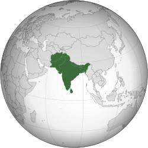

Future of Higher Education – A South Asian Perspective
In continuance with the mission of Global Education Forum, Garden City University (GCU) join hands to host the South Asian chapter of the GEF event on future of higher education addressing the question “How must a 3rd millennium university reinvent itself to respond to the new needs of society?”
More about GCU


South Asia, home to 24% of world’s population, including 27% of the world’s youth is a region of great diversity, cultures, and economies. South Asia includes three out of the nine most populous countries of the world (Bangladesh, India, and Pakistan), two islands (Sri Lanka and Maldives), and three landlocked countries (Bhutan, Nepal, and Afghanistan).
The event will reflect on the 12 points of the GEF manifesto from the South Asian perspective promoting transformation of higher education and university system. The insights developed from the event will be aiding in achieving SDG4 - 2030 Agenda to “ensure inclusive and equitable quality education and promote lifelong learning opportunities for all”.
Welcome all to the SOUTH ASIAN CHAPTER OF GLOBAL EDUCATION FORUM hosted by CITY UNIVERSITY in association with UCJC.